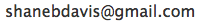

Babel Bridge
Create parsers with ease 100% in Ruby.
Install
It's a gem, installed like any other:sudo gem install babel_bridgeHow to Create a Turing-Complete Language in 40 minutes
Watch this video to see how easy it is to make cool things happen with Babel-Bridge.
A Quick Example
To create a new parser, declare a new class and inherit from BabelBridge::Parser. Inside your parser class, list all your parsing rules.
To use your parser, create a new instance and call parse, passing in the string you wish to parse.
require "babel_bridge"
class MyParser < BabelBridge : :Parser
rule :foo , "foo" , :bar?
# rule named :foo
# match the string "foo"
# optionally followed by the rule :bar
rule :bar , "bar"
# rule named :bar
# match "bar"
end
parser = MyParser . new
parser . parse "foo" # matches "foo"
parser . parse "foobar" # matches "foobar" Features
- Full parsing expression grammer support with memoizing
- Full Ruby regular expressions support for terminals
- Simple, convention-based parse-tree class structure
- Human-readable parse-tree dumps
- Detailed information about parsing failures
- Custom sub-parser hooks
- Shortcuts for matching lists with delimiters
Goals
I was inspired by Treetop's use of parsing expression grammars in Ruby. PEGs let you think about parsing as a giant regular expression with function calls (sub-rules). However I found Treetop's custom .treetop files awkward to work with.
I wanted a way to express PEGs directly in my Ruby code. As an active Rails developer, I wanted to embrace Convention-Over-Configuration and DRY and come up with a declarative API similar to ActiveRecord. I started out writing patches to Treetop, but it quickly became evident my direction was incompatible with the existing codebase. So, on a whim, I started Babel Bridge. A few weeks later, and surprisingly little code (786 lines in 0.1.1), I am quite please with the result.
Overall, my goal is to make it easy to write grammars and easy to debug them when they aren't working.
Status
The initial release is stable, but has only been lightly tested. Please let me know if you have problems.System Requirements
Ruby 1.8 and 1.9 are supported.Related Work
Other Ruby based parsers using parsing expression grammars:Further reading
Project Links
- Source: github.com/shanebdavis/Babel-Bridge
- Contact: Shane Brinkman-Davis: 